- What happens to a house after the mortgage goes unpaid
- What mortgage field services actually is
- The players, who does what
- How the money flows
- The work order lifecycle
- How to become a vendor
- The work itself, common work types
- Photo documentation, the rule that prevents reopens
- Bids, allowables, and pricing
- Completing the work, packages, invoices, QC
- The back office, where vendors lose their evenings
- How to get started, a practical checklist
- FAQ
Every town has them. The empty house with the lawn that never stops growing. The boarded window on the corner lot. The place with the notice on the door.
If you work in real estate, you have seen these properties. Maybe as a listing that needed a full rehab. Maybe as the house that sat vacant all winter. If you run a crew or a small contracting business, you have driven past them and wondered who actually gets paid to fix them.
There is a whole industry behind those houses. It is called mortgage field services, and it is also known as property preservation or default field services. It is one of the least understood corners of real estate, and it is also one of the most accessible ways for a contractor, a crew, or a laborer to build steady, recurring work.
This guide explains how the industry actually works, end to end. What happens to a house after a mortgage goes unpaid. Who the companies are that move the work. How a vendor gets onboarded. What the day to day work looks like. How pricing and bids really work. And where the back office fits in. It is written for three audiences at once: real estate professionals who want to understand the default and REO side of the business, contractors and vendors who want to get into the industry, and crews and laborers looking for field work.
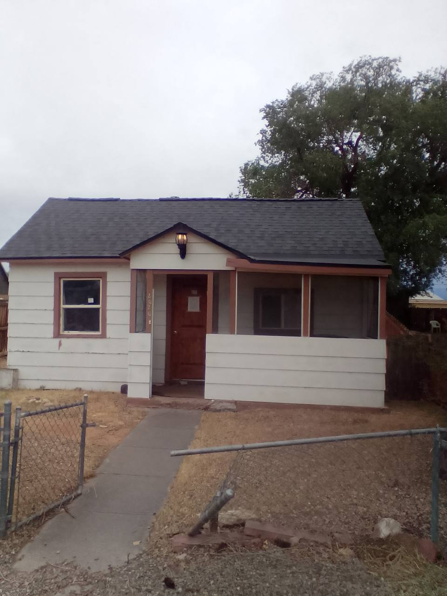
What happens to a house after the mortgage goes unpaid
The chain is longer, and more structured, than most people expect.
A borrower misses payments. The servicer, the company that collects the payments on the loan, first tries to keep the loan alive. Forbearance plans. Repayment arrangements. Loan modifications. That is called loss mitigation, and it is where most defaults actually get resolved.
Sometimes it is not enough. The property goes through foreclosure, a legal process that ends with the borrower losing the home. The occupants leave through the legal eviction process, which is carried out by local authorities, or through a negotiated move out. Some servicers offer cash for keys relocation assistance, a payment that helps occupants leave voluntarily and hand the property over in better condition. It is not a happy moment for anyone involved. But by the time the door is locked, the house sits empty.
And an empty house deteriorates fast. Pipes freeze. Lawns overgrow and draw code violations. Vandals and weather do their damage. The lender still owns the asset, the loan is in default, and the property is the collateral. Left alone, the loss grows every single month.
So the lender or servicer hires a national field service company, a company whose entire business is protecting defaulted properties. That company sends work orders to a network of regional vendor companies and independent field vendors. A crew inspects the property, changes the locks, mows the lawn, winterizes the plumbing, removes debris, documents everything with photos, and reports back through an online portal. The vendor invoices the work. The national company pays. The lender gets a preserved asset instead of a growing loss.
That is the industry in one paragraph. The rest of this guide pulls it apart piece by piece.
What mortgage field services actually is
Mortgage field services is the set of services performed on properties that are in default, vacant, or real estate owned (REO), on behalf of lenders, mortgage servicers, and investors. The homeowner or occupant is not the customer. The customer is the institution that holds or services the loan.
The service menu, drawn from what the national companies themselves publish, typically includes:
- Inspections, occupancy verification (is anyone living there?), property condition assessments, drive by and full interior inspections
- Property condition reports (PCRs), detailed documentation of a property's condition, room by room, with photos
- Securing, lock changes, boarding windows and doors, steel security solutions
- Lawn and grounds maintenance, mowing, weeding, edging, sweeping, and automatic or recurring grass cut programs that keep a property maintained week after week until it sells
- Snow removal, walkways and driveways for safe access
- Winterization, protecting plumbing from freeze damage
- Debris removal, interior, exterior, and hazardous debris
- Repairs, roof repair and replacement, insurance claim repairs (storm, fire, water, theft), and make ready or turn work that prepares a property for sale
- Code violation resolution, working with local municipalities to close out violations
- Pool securing and maintenance
- Utility management, transfer, activation, deactivation, payment handling
- Eviction support and lockouts, coordinating with local authorities as part of the legal process (more on this below)
- Relocation assistance (cash for keys), coordinating move out exchanges with occupants
- Conveyance condition management, making sure all required work is complete so the property can be conveyed in proper condition
- Asset registration, registering vacant properties with local municipalities where ordinances require it
What the industry is not: it is not property management of occupied rentals, it is not real estate sales, and, despite how it is sometimes described, field service companies do not evict people themselves. Eviction is a legal process carried out by courts and local authorities. What field companies do is coordinate lockouts and eviction support with local authorities as part of that process, and then secure and maintain the property once it is vacant.
See the service menus directly: MCS, Property Preservation and ServiceLink, Field Services.
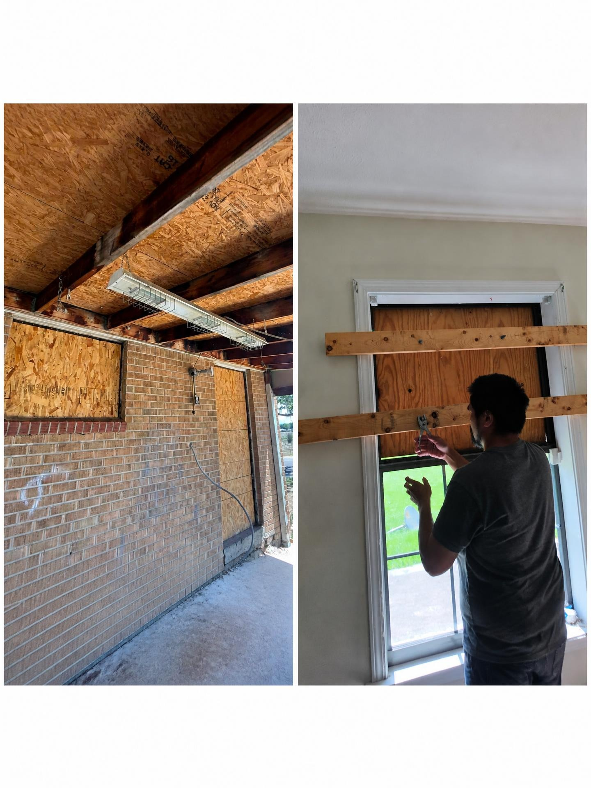
The players, who does what
Five kinds of businesses make up the industry. Knowing where you fit is the first step into it.
1. Lenders, servicers, and investors (the clients)
Banks, credit unions, mortgage servicers, government sponsored enterprises (Fannie Mae, Freddie Mac), and government programs (FHA/HUD, VA). They hold or service the loans, and they pay for the field work. They publish the rules, especially the allowable pricing, that everyone downstream works under.
2. National field service companies (the nationals)
These are the companies the banks hire. They hold the client relationships and run the vendor networks. The biggest names include Safeguard Properties, MCS (Mortgage Contracting Services), Five Brothers (now part of MCS), ServiceLink, Cyprexx, Altisource, National Field Representatives (NFR), and A2Z Field Services, along with others like Guardian Asset Management, VRM Mortgage Services, United Field Services, First Allegiance, Brookstone Management, and Northsight Management. Each runs its own vendor portal, its own documentation standards, and its own payment terms.
3. Regional vendor companies (the middle layer)
Nationals rarely contract directly with individual crews across the whole country. They work through regional vendor companies that hold the contracts and manage the local crews. They hold vendor contracts with several national companies and organize the contractors who actually touch the properties. This is the layer most new contractors will work with first.
4. Independent field vendors and crews (the boots on the ground)
The contractors, handymen, lawn crews, cleanout crews, and laborers who inspect, secure, maintain, and repair the properties. They are typically paid per work order, as 1099 independent contractors.
5. Back office processing companies (the paperwork layer)
Field vendors spend their days on properties and their evenings in portals, processing work orders, writing bids, labeling photos, completing PCRs, invoicing, and answering reopens. That back office workload is a full time job on its own, and it is exactly what companies like Feuern Outsourcing do for preservation contractors. More on that in the back office section.
Download the one page industry map: a simple diagram of the whole chain, from lender to field crew, with the back office processor alongside. Open the industry map (print it or save it as a PDF).
How the money flows
Follow the money and the industry makes sense:
Lender/servicer → national field service company → regional vendor → field crew.
A few things to understand about that flow:
- It is 1099 work. Vendors are independent contractors, not employees. You invoice per work order, you file a W9, and you handle your own taxes.
- Pricing is allowable driven. Every client (lender, servicer, investor) publishes allowable pricing, the standard amount they will pay for each task, per region. Allowables are set per client and per loan type, and they are not published publicly. What a vendor sees is the allowable attached to each work order in the portal.
- Work above the allowable needs an approved bid. If a property needs more than the standard task, a large debris removal, a roof repair, a full rehab, the vendor submits a priced bid (sometimes called a proposition). The client approves, revises, or rejects it before the work starts.
- Invoicing happens per work order. A clean invoice, matched to the approved allowable or bid, with complete documentation, gets paid. An incomplete one waits, or comes back as a reopen.
One honest note: nobody in this chain publishes a public price list. Anyone promising you top rates before you are inside a portal is selling you something.
The work order lifecycle, from assignment to payment
This is the heartbeat of the industry. Every dollar a vendor earns passes through the same seven steps.
- Assignment. A work order appears in the vendor's portal, the online system the national or regional vendor runs. It tells you the property, the task, the deadline, and the allowable.
- Field visit. The vendor or a crew goes to the property, performs the task, and captures photos: before, during, and after, plus every view the work order lists.
- Documentation. Photos are labeled and organized, the property condition report is completed, notes are written.
- Processing. The work order is completed in the portal: line items entered, bids attached, invoices prepared.
- Quality control. Everything is checked against the client's requirements before submission: photos present, dates correct, amounts matched to allowables or approved bids.
- Submission and review. The client reviews. The order is approved, or it comes back as a reopen.
- Payment. Approved invoices are paid per the vendor's payment terms. Avoidable errors can come back later as backcharges, deductions for vendor mistakes.
Where reopens come from
The same five mistakes show up again and again:
- Vague bid scopes. "Fix fence" tells a reviewer nothing. Say what, where, and how much.
- Missing photo sequences. No before, or no after. The order is reopened, payment waits, and someone may have to drive back to reshoot.
- Late submissions. Deadlines are firm. A late order risks a deduction or losing the work.
- Work above the allowable without an approved bid. You usually absorb the difference.
- Weak reopen documentation. A reopen answered with no clear note or photos leaves the backcharge in place.
None of these are field skill problems. They are paperwork problems, and they are fixable. A good processor checks for all five before anything is submitted, so the vendor hears about a gap while the crew is still on site, not after a deduction lands.
Go deeper: Inside a Work Order: What Actually Happens Before It Gets Submitted, and the printable work order lifecycle checklist.
How to become a vendor, the onboarding guide
What you need before you apply
Every national asks for the same core package. Have it ready before you start:
- A registered business, typically an LLC, with an EIN. This is 1099 work; you will file a W9.
- Insurance, $1 million general liability plus errors and omissions (E&O) coverage is the standard requirement; some clients want higher limits. Workers' compensation, or a zero employee exemption on file.
- A background check, the industry uses services like ABC# / Shield Hub; an IC01 rating is ideal.
- A defined coverage area, usually 2 to 3 counties, roughly a 30 to 40 mile radius around your base.
- The basics for the field, reliable vehicle, tools for the services you offer, and a camera or phone with the date and time set correctly (portals check photo datestamps).
The general path
- Apply on the national's vendor page (links below).
- Submit documents, W9, certificate of insurance, business license, workers' comp proof.
- Verification, insurance and background checks. Approval typically takes a few weeks to a few months, which is why you should apply to several companies at once.
- Portal training, each national trains you on its system and documentation standards.
- First orders, most vendors start with inspections and maintenance tasks, then earn repair and rehab work as they build a track record.
Your income should never depend on one company's volume. Apply to five or more.
Safeguard Properties
One of the largest names in mortgage field services, with a vendor network across all 50 states. Vendors work through Vendor Web and the SafeView Preserve mobile app for field documentation. Safeguard publishes vendor training resources (security checklists, invoicing dispute guides, snow maps) in its Vendor Resource Center, and notes that it is always recruiting vendors.
Apply: safeguardvendors.com · Resources: safeguardproperties.com · Portal login: vnet.safeguardproperties.com
MCS (Mortgage Contracting Services)
A major national serving servicers nationwide, known for steady volume across preservation, inspections, eviction support, and repairs. MCS runs the MCS360 platform and publishes its full preservation service menu publicly. Note: MCS acquired Five Brothers Asset Management in March 2024, the two now operate together.
Apply: mcs360.com · Services: mcs360.com
Five Brothers (now part of MCS)
A preservation and asset management company with more than 50 years in the industry, offering preservation and maintenance, turn- and make ready services, inspections, eviction/lockout and cash for keys coordination, and REO asset management, supported by its FiveOnline platform. Because of the MCS acquisition, new vendor applications are handled through the combined MCS/Five Brothers vendor channels, starting at the vendor page below.
Apply: fivebrms.com
ServiceLink
The field services division of a large default services company. Its field services cover inspections (occupancy verification, insurance loss, sale date, disaster, frequents, work in progress), property preservation (grass cuts, snow removal, winterization, code violation remediation), conveyance processing, asset registration, utility management, and REO services, nationwide plus Guam, the U.S. Virgin Islands, and Puerto Rico, supported by its AssetShield technology platform.
Field services: servicelink.com
Cyprexx
A full service preservation and REO company, part of the Altisource portfolio, headquartered in Florida. Cyprexx is known for structured, flat fee task work and hurricane season responsiveness.
Apply: cyprexx.com
Altisource
A larger real estate and mortgage marketplace company whose field services arm runs a national vendor network; Cyprexx is part of its portfolio. A route into institutional servicer work beyond preservation alone.
Vendor network: altisource.com
NFR (National Field Representatives)
One of the longest established names in the industry, strong in inspections and preservation, serving clients in all states. NFR publicly emphasizes long term relationships with field vendors, coverage area flexibility, cross training, and retention programs.
Apply: nfronline.com
A2Z Field Services
A growing national actively recruiting vendors for inspection, preservation, borrower contact, and repair and rehab services. Offers personalized account management, a technology platform for managing assignments, and continued vendor training.
Apply: a2zfieldservices.com · Application form: vendorweb.a2zfieldservices.com
More nationals to apply to
| Company | Vendor page |
|---|---|
| Guardian Asset Management | guardianassetmgt.com |
| VRM Mortgage Services (HUD & VA approved) | vrmco.com |
| United Field Services | unitedffs.com |
| First Allegiance | ami.firstallegiance.com |
| Brookstone Management | brookstonemanagement.com |
| Northsight Management | northsight.com |
Other doors into the industry
- Government and GSE programs. HUD maintains a contractor registry for FHA property work; Fannie Mae runs REOTrans and Freddie Mac runs HomeSteps for REO disposition work. These are direct routes that bypass the nationals but require stronger credentials.
- Third party inspection platforms. Some nationals route inspections through platforms such as Pruvan, Aspen Grove, or InspectorADE. Your onboarding contact will tell you which accounts you need.
- Regional vendor companies. If you are a crew rather than a business owner, the fastest route is working as a subcontractor for a regional vendor, the middle layer described above.
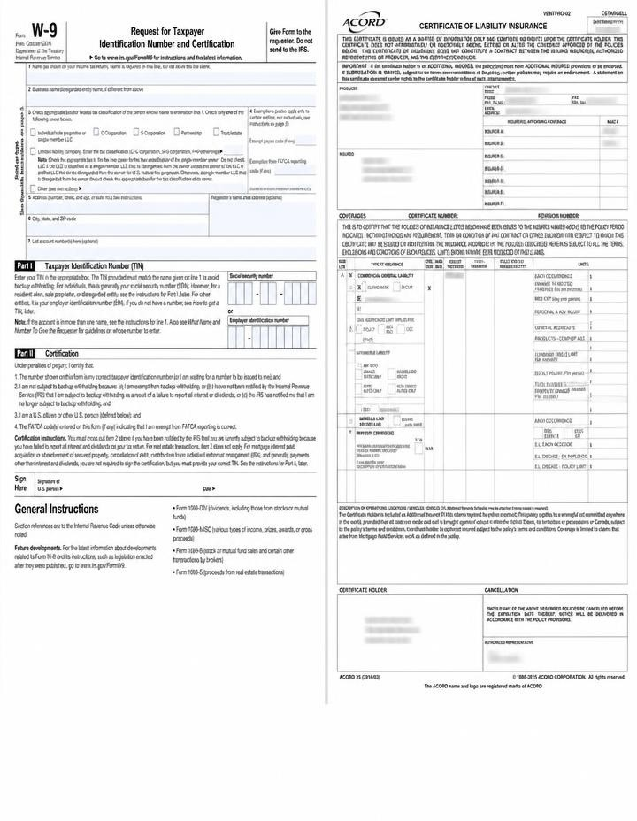
The work itself, common work types
Inspections and property condition reports
The entry point for most new vendors. An occupancy inspection verifies whether a property is occupied, vacant, or abandoned. A property condition report (PCR) documents the condition of the property, interior and exterior, room by room, with photos, so the servicer knows exactly what it owns. Accuracy matters more than speed here: a missed damage item becomes someone else's problem later.
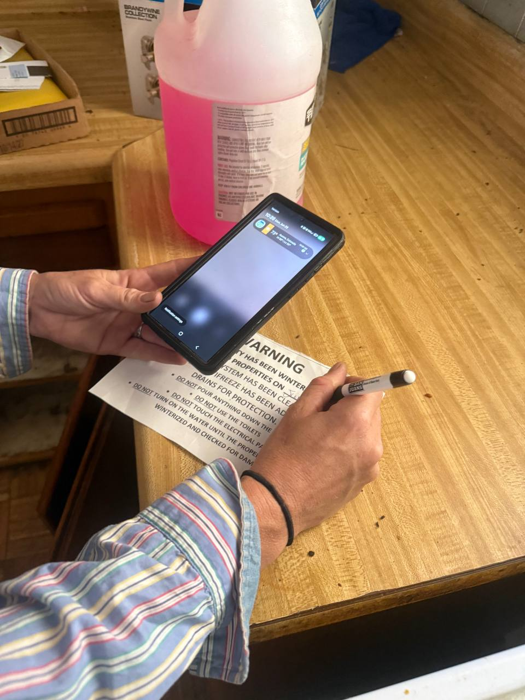
Securing and board ups
Lock changes (to the client's specified key code), boarding broken windows and doors, steel security screens and door solutions. Fast, physical, and usually the first thing that happens to a vacant property.
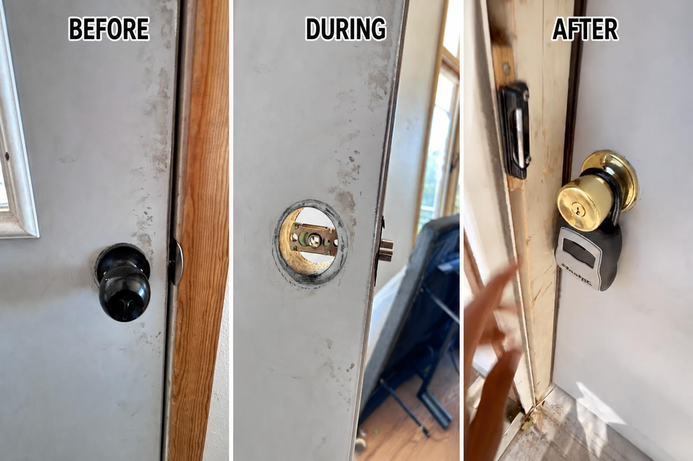
Lawn maintenance and recurring grass cuts
The steady backbone of the industry. Mowing, weeding, edging, sweeping paved areas, removing clippings. Many nationals run automatic grass cut programs: the property is cut on a schedule every week or two through the season until it sells. Where portal rules allow, photos for recurring cuts can be reused properly across a season. Ask your processor or vendor manager how it works for each portal, so you do not reshoot what you do not have to.
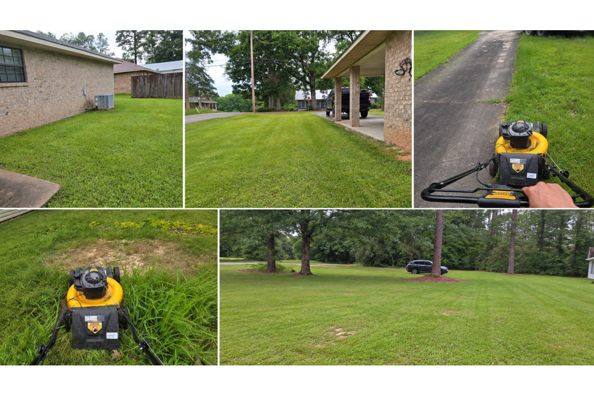
Winterization and snow removal
Winterization protects plumbing from freeze damage: draining lines, blowing out water, treating systems. Snow removal keeps walkways and driveways safe and accessible. Both are seasonal, deadline driven, and documentation heavy.
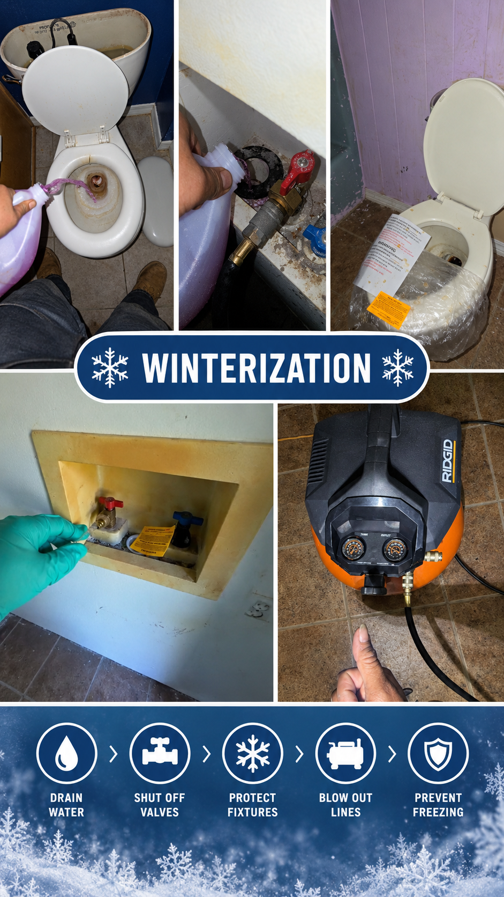
Debris removal
Interior, exterior, and hazardous debris, from a few bags of trash to a full cleanout. This is where crews and laborers often enter the industry. Disposal documentation and before/after photos are part of the package.
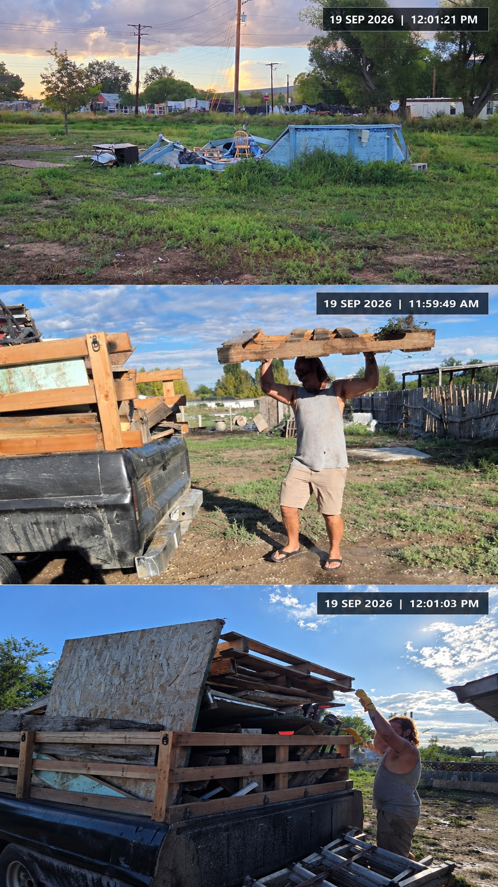
Repairs and rehab
Roof repair and replacement, insurance claim repairs (storm, fire, water, theft), and make ready/turn work that prepares an REO property for sale. Repairs are where the money is, and where bids, allowables, and approvals matter most.
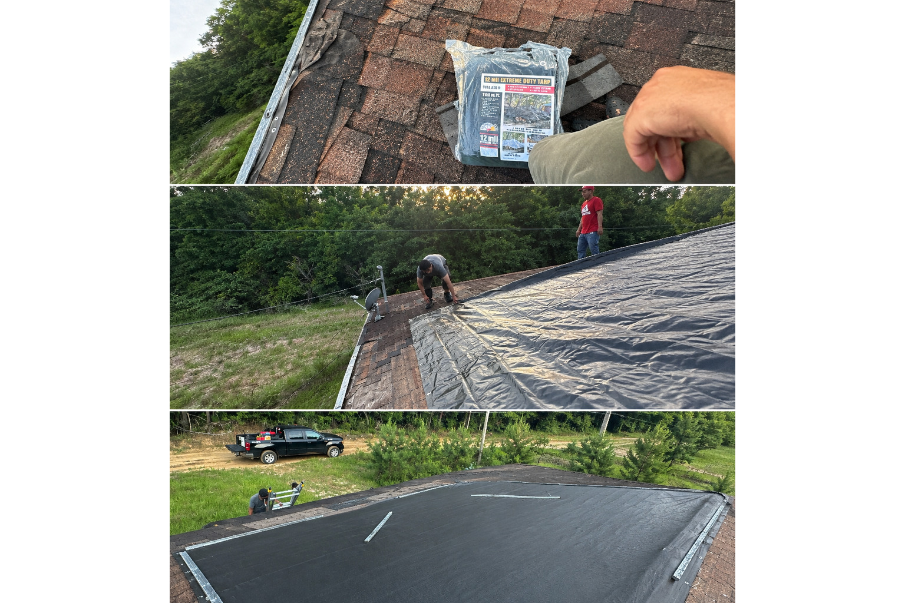
Eviction support and lockouts
Described accurately: after a legal eviction, field companies coordinate with local authorities to complete the lockout, changing locks, securing the property, and, where instructed, handling the removal, storage, or disposal of personal property per local rules, investor guidelines, and the law. Cash for keys and relocation assistance programs coordinate the occupant's move out in exchange for a payment. This work is procedural, documented, and strictly rule bound.
Photo documentation, the rule that prevents reopens
If you remember one thing from this guide, remember this:
"Before, during, and after, for every task. One task, three views."
The standard that keeps work orders from coming backCut grass? Show the lot before, a shot of the work, and the finished lot. Board a window? Show the opening, the boards going on, and the result.
Cover every instruction. Read the work order line by line. If it asks for an address photo, a street sign, or a roof shot, take it. A missing listed photo is one of the easiest reopens to avoid.
Datestamps matter. Portals check dates. A photo with no date, or the wrong date, can be questioned even when the work was done correctly. Keep your camera date correct and your timestamps on.
Seasonal reuse, where allowed. For recurring grass cuts, portal rules in some programs allow proper photo reuse across a season. Ask how it works for each portal, it saves real time.
"A few extra photos cost you seconds. A reopen costs you a return trip."
Worth framing on the wall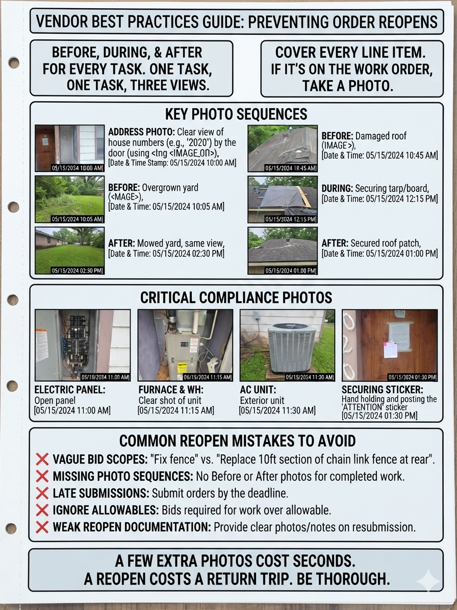
Print it, keep it on the truck: the photo documentation checklist, one page, built from this standard.
Bids, allowables, and pricing, how the money really works
Allowables are the standard prices a client will pay for standard tasks, published per client, per region, per loan type. They are visible in the portal, attached to each work order. Your job on standard work is to complete it cleanly at the allowable.
Bids (sometimes called propositions) are for everything beyond the standard task. A strong bid says what, where, and how much:
- A clear scope, the exact work, room by room or item by item
- Quantities and measurements, square footage, linear feet, item counts
- Photo justification, photos showing why the work is needed
- Cost justification, why the price is what it is, with line items in the client's required format (some clients require Bluebook compliant pricing)
- The right timing, submitted before the work starts, not after
Work above the allowable without an approved bid usually means you absorb the difference. A vague bid gets rejected, or approved at a lower amount, and the delay pushes your start date. Pricing in this industry is not a mystery and it is not a negotiation across a table. It is documentation. The vendor whose paperwork is precise gets approved faster and paid cleaner.
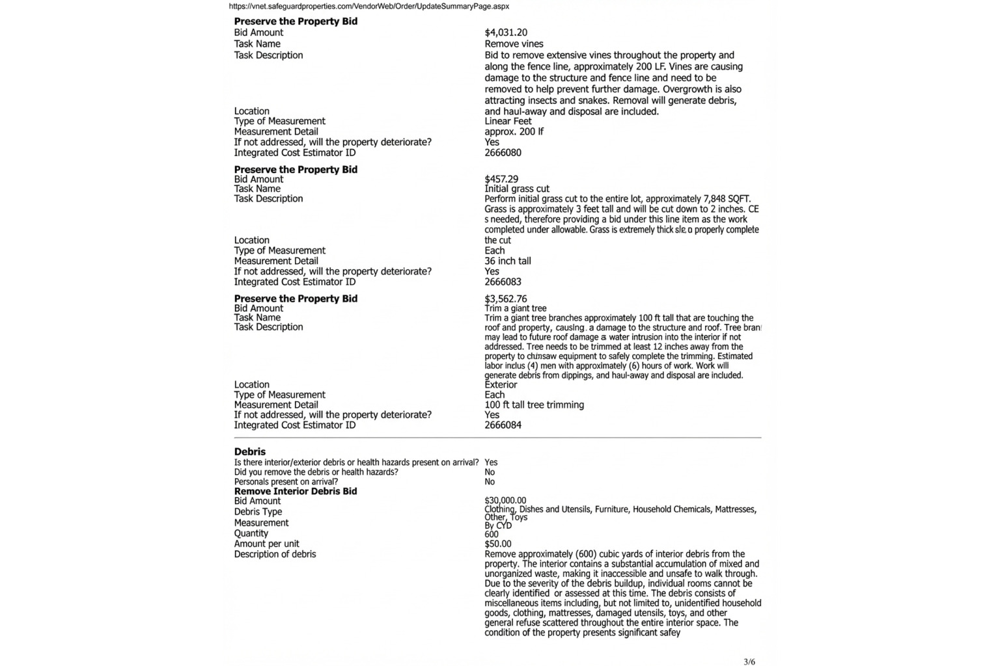
Related reading: Why Safeguard Rejects Bids (and How to Write Ones That Get Approved), and the printable sample bid template.
Completing the work, packages, invoices, and QC
A finished job is not finished when the crew leaves. It is finished when the completion package is complete:
- All required photos, before, during, after, plus every listed view, labeled and in order
- The property condition report or work order notes, complete
- The invoice, line itemed and matched to the allowable or the approved bid
- Any supporting documents, receipts, disposal tickets, permits where required
Quality control happens before submission, not after. Check the package against the work order line by line. Then submit.
When something comes back anyway, and eventually it will: a reopen is the client returning the order for a missing or incorrect item, a dispute is a disagreement over payment or scope, and a backcharge is a deduction for a vendor error. The way you answer a reopen decides whether the money is recovered: a clear note explaining what happened, plus the photos that prove it. A reopen answered with no note and no photos leaves the backcharge in place.
The back office, where vendors lose their evenings
Here is the part almost nobody talks about. The crew does the field work during the day. Then someone has to sit down and process it: enter the work order in the portal, write the bid, label and upload the photos, complete the PCR, prepare the invoice, run QC, answer the reopen that came in yesterday. For a vendor doing a dozen work orders a week, that is a second full time job, usually done at night, usually done by the same person who was on a roof that morning.
That is the gap a back office processing company fills. For U.S. property preservation and mortgage field service contractors, that means: work order processing and portal updates, bid and proposition writing, photo review and labeling, property condition reports, invoicing, completion packages, quality control before submission, reporting, and coordination with field teams.
That is what Feuern Outsourcing does. We are a remote back office team working US time zones and supporting U.S. property preservation and mortgage field service contractors. Since 2020, we have processed more than 20,000 work orders, bids, photo documentation, PCRs, invoices, and completion packages, for contractors whose clients include the national companies named in this guide. We started as processors ourselves, so we know what the portals expect.
You handle the field work and the photos. We handle the processing. If that sounds like your evenings, start with one trial order and judge the quality firsthand.

How to get started, a practical checklist
- Register the business, LLC, EIN, business bank account.
- Get insured, $1M general liability + E&O; workers' comp or exemption.
- Clear the background check, ABC# / Shield Hub.
- Define your coverage area, 2 to 3 counties you can serve reliably.
- Set up the field kit, tools for your services, reliable vehicle, camera or phone with the date and time correct.
- Apply to five or more nationals, use the links in this guide. Do not wait for one answer.
- Complete portal training when approved, every portal is different; treat training as part of the job.
- Start with inspections and maintenance, earn repair and rehab work with a clean track record.
- Document everything, before, during, after, every listed view, correct datestamps.
- Consider back office support early, the processing workload grows with every order you take.
Printable version: the new vendor checklist, one page with all ten steps as checkboxes.
FAQ
Do I need an LLC to become a vendor?
Most nationals require a registered business with an EIN, because the work is 1099. Some will work with sole proprietors, but an LLC plus proper insurance is the standard path, and it protects you.
What insurance do I need?
The common requirement is $1 million in general liability plus errors and omissions coverage, plus workers' compensation (or a zero employee exemption). Some clients require higher limits, so check each vendor agreement.
How long does approval take?
Typically a few weeks to a few months, depending on the company and how complete your documents are. Apply to several at once.
Do I need experience?
For inspections and maintenance, no, nationals train new vendors. For repairs and rehab, you will usually need to show licensing, insurance, and a track record, which many vendors build by starting with maintenance work.
How do I get my first work order?
After approval and portal training, orders are assigned based on your coverage area and the services you signed up for. Responsiveness and clean documentation earn you more assignments over time.
What is an "allowable"?
The standard price a client will pay for a standard task, set per client, region, and loan type. Work beyond the allowable requires an approved bid.
What is a reopen, and what is a backcharge?
A reopen is a work order returned to you for a missing or incorrect item. A backcharge is a deduction for a vendor error. Answer every reopen with a clear note and photos.
Can I work for several nationals at once?
Yes, and you should. Diversifying across nationals and regional vendors keeps your volume steady when one client's flow slows down.
The industry is bigger than it looks
Behind every vacant property there is a chain: a servicer protecting a loan, a national company managing the asset, a regional vendor coordinating crews, a contractor on the property, and a processor making sure the paperwork gets the job paid. It is unglamorous work, mowing lawns, boarding windows, photographing empty rooms. But it is steady, nationwide, and always in demand, because houses will always go into default and someone always has to protect them.
If you are a contractor or crew looking for recurring work, the path in is clear: get the business basics, get insured, apply to several nationals, and keep your documentation clean. If you are a real estate professional, understanding this pipeline will make you sharper on every distressed or REO listing you touch.
And if the field work is yours but the portal work is not, that is a solvable problem too.
Free downloads from this guide
Industry map, one page
The whole chain in one diagram: lender to field crew, plus the back office layer.
PDF / PrintWork order lifecycle checklist
The seven steps from assignment to payment, with the five reopen causing mistakes.
PDF / PrintPhoto documentation checklist
Before, during, after. Cover every instruction. Datestamps on. Keep it on the truck.
PDF / PrintSample bid template
Scope, quantities, measurements, photo references, and line item pricing, ready to fill in.
PDF / PrintNew vendor checklist
The ten getting started steps, from LLC and insurance to your first five applications.
All five open as clean printable pages, save them as PDF from your browser and they are ready to hand to a crew.
All application links in one place
| Company | Link |
|---|---|
| Safeguard, apply | safeguardvendors.com |
| Safeguard, vendor resources | safeguardproperties.com |
| Safeguard, portal login | vnet.safeguardproperties.com |
| MCS, apply | mcs360.com |
| MCS, services | mcs360.com |
| Five Brothers, vendors | fivebrms.com |
| ServiceLink, field services | servicelink.com |
| Cyprexx, vendors | cyprexx.com |
| Altisource, vendor network | altisource.com |
| NFR, become a vendor | nfronline.com |
| A2Z Field Services, vendors | a2zfieldservices.com |
| A2Z, application form | vendorweb.a2zfieldservices.com |
| Guardian Asset Management | guardianassetmgt.com |
| VRM Mortgage Services | vrmco.com |
| United Field Services | unitedffs.com |
| First Allegiance | ami.firstallegiance.com |
| Brookstone Management | brookstonemanagement.com |
| Northsight Management | northsight.com |